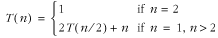
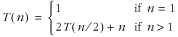
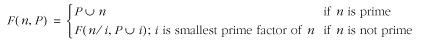
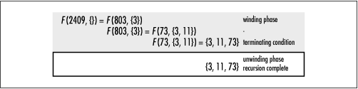
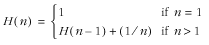
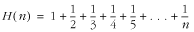
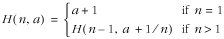

3.3 Questions and Answers
Q: The
following recursive definition has an error. What is it, and
how can we fix it? For a positive integer n, the definition, in its proper
form, is common in formally computing the running time of
divide-and-conquer algorithms, such as merge sort (see Chapter
12). Merge sort divides a set of data in half, then
divides the halves in half, and continues this way until each
division contains a single element. Then, during the unwinding
phase, the divisions are merged to produce a final sorted
set.

A: The problem
with this definition is that it never reaches the terminating
condition, n = 0, for any initial value of n greater than 0. To fix the problem,
it needs an obtainable terminating condition. The condition
n = 1 works well, which means
we should also change the second condition in the function. A
recursive definition with an acceptable terminating condition
is presented here:

This happens to be the correct definition for
the running time of merge sort. Such a function is called a
recurrence. In more formal analysis, recurrences are
used frequently to describe the running times of recursive
algorithms.
Q:
Describe a recursive approach for computing the prime factors
of a number. Determine whether the approach is tail recursive,
and describe why or why not.
A: Recursion
is a natural way to find the prime factors of a number because
factoring is really just the same problem over and over again,
only a little smaller, as we determine each factor. A
recursive approach to this problem can be defined as
shown:

This definition says that to determine the
prime factors of a number n
recursively, determine its smallest prime factor i, record this in a set of factors
P, and repeat the process for
n = n /i.
Continue this way until n is
found to be prime itself, which is the terminating condition.
This definition is tail recursive because there is nothing
that needs to be done during the unwinding phase, as Figure
3.6 confirms.

Q: Considering
how the stack is used in executing recursive functions, what
happens when the winding phase of a recursive process never
terminates, perhaps as a result of a malformed terminating
condition, as in the first
question?
A: If the
terminating condition of a recursive function is never
reached, eventually the stack grows past an acceptable size
and the program aborts from a stack overflow. A special pointer,
called the frame pointer, keeps track of the top of the stack as a
program executes. It is also used to determine when the stack
has grown too large. An interrupt is raised to signal the
error.
Q: Recursive
functions frequently offer simple yet concise ways to describe
useful computations. Describe the computation that the
following recursive definition describes:

A: This recursive definition
calculates a series like the following one, called the harmonic series. For positive
integers n, the function
calculates the n th harmonic
number. (The calculation proceeds in reverse order from what
is shown, but the following form is more recognizable.)

Q: Is the
function in the previous question tail recursive? If so,
describe why. If not, describe why not and present a
tail-recursive version.
A: The
function defined in the previous question is not tail
recursive because the return value of the recursive call is
used in an expression. This expression becomes the return
value of the current call. Therefore, each activation must
remain on the stack until it gets the return value of
subsequent activations. To make this function tail recursive,
we can use an approach like the one presented earlier in the
chapter for computing a factorial in a tail-recursive manner.
We use an additional parameter a to keep a tally of the total value
of the series computed thus far in the recursion. Formally, a
tail-recursive version of the function in the previous
question is as follows:
 |